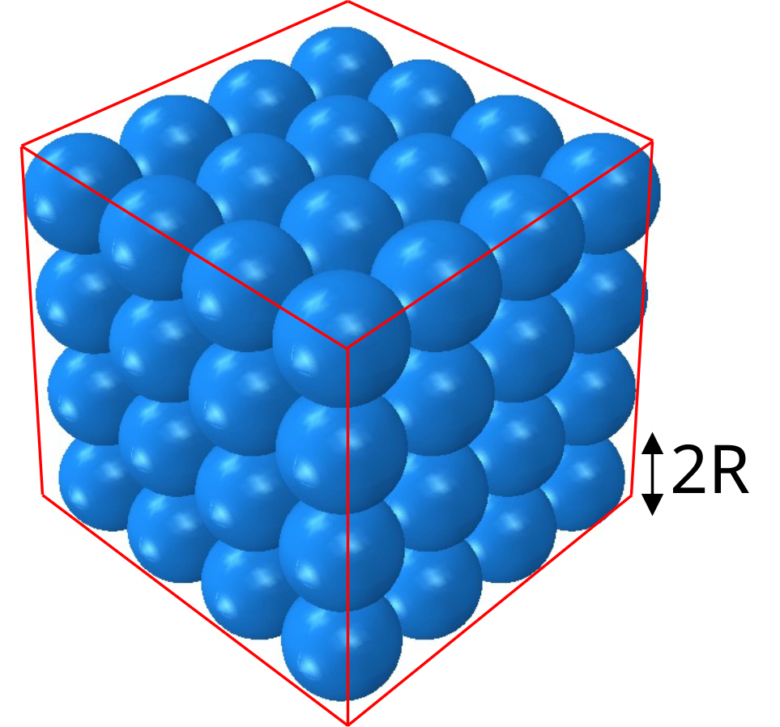
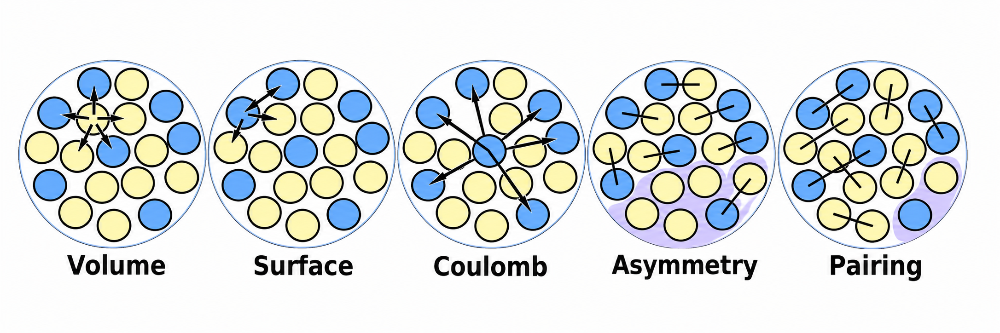
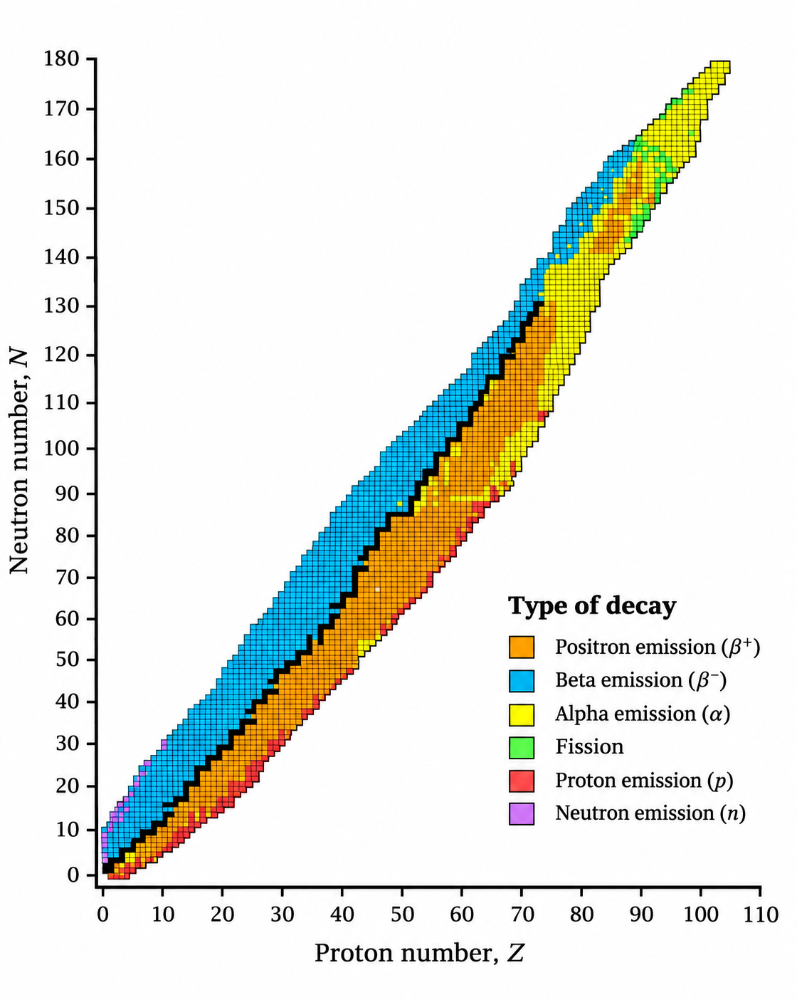

1 Atoms and the Structure of Matter
1.1 Why study the properties of matter?
The behaviour of an everyday object emerges from the collective behaviour of an enormous number of atoms. Newtonian mechanics is a powerful description of a small number of bodies, but following every atom in a macroscopic sample is neither practical nor necessary. In this course we connect a microscopic picture—atoms, their energies and their interactions—to macroscopic properties such as temperature, pressure and elasticity.
This chapter follows Lecture 1, Introduction and ‘Atomos’. Its purpose is partly to establish the scale of atoms and to practise making useful estimates. Detailed interatomic forces begin in Chapter 2.
1.2 What is an atom?
An atom has a nucleus containing protons and neutrons, surrounded by electrons. The atomic number \(Z\) is the number of protons; the mass number \(A\) is the total number of nucleons. An isotope is specified using
\[ {}^{A}_{Z}\mathrm{X},\qquad N=A-Z, \]
where \(N\) is the neutron number. For example, uranium-238 is \({}^{238}_{92}\mathrm{U}\) and has 146 neutrons. Isotopes of one element have the same \(Z\) but different \(N\).
The simple geometrical picture in Figure 1.1 shows the meaning of the diameter \(2R\) used in the Lecture 1 atomic-size estimate. The diagram is adapted from the PowerPoint arrow and spacing annotation rather than reproducing an image of uncertain provenance.
1.2.1 Atomic notation and the scale of the nucleus
The chemical symbol determines the element because it specifies \(Z\). A neutral atom contains \(Z\) electrons, but a positive ion has fewer electrons than protons. Do not confuse mass number \(A\) with atomic mass: \(A\) is an integer count, while isotopic masses in u are measured quantities and need not be integers. Figure 1.2 illustrates the notation used throughout the chapter.

An atomic radius is typically of order \(10^{-10}\,\mathrm{m}\); nuclear dimensions are of order \(10^{-15}\,\mathrm{m}\). The nucleus occupies a tiny fraction of the atom’s volume, although it contains nearly all of its mass. The atomic-size estimate below uses macroscopic density rather than assuming we can see individual atoms.
1.3 Atomic masses and isotopic abundance
The unified atomic mass unit, \(\mathrm{u}\) (also called the dalton, Da), is defined as one twelfth of the mass of a neutral carbon-12 atom in its ground state. To three significant figures,
\[ 1\,\mathrm{u}\approx 1.66\times10^{-27}\,\mathrm{kg}. \]
The relative atomic mass of an element is an isotope-abundance-weighted mean, rather than necessarily an integer.
Suppose a sample contains only carbon-12 and carbon-13, with fractions \(1-f\) and \(f\), and approximate their isotopic masses by 12 and 13 u. If its relative atomic mass is 12.011, then
\[ 12(1-f)+13f=12.011\quad\Rightarrow\quad f=0.011. \]
Thus the simplified model estimates 1.1% carbon-13. Actual isotopic masses are not exact integers and trace carbon-14 can exist; this is an intentionally approximate introductory calculation.
1.4 The mole and the number of atoms
One mole contains exactly
\[ N_\mathrm{A}=6.02214076\times10^{23}\,\mathrm{mol^{-1}} \]
specified elementary entities. For a pure element of molar mass \(M\), the number of atoms in a sample of mass \(m\) is
\[ N=\frac{m}{M}N_\mathrm{A}. \]
Taking \(M\approx238\,\mathrm{g\,mol^{-1}}\),
\[ N=\frac{1000\,\mathrm{g}}{238\,\mathrm{g\,mol^{-1}}}\times 6.022\times10^{23}\,\mathrm{mol^{-1}} \approx2.53\times10^{24}\ \text{atoms}. \]
1.5 Estimating the size of an atom from density
Density gives a route from a macroscopic measurement to an atomic length scale. If the density is \(\rho\) and the molar mass is \(M\), the average volume per atom is
\[ V_\mathrm{atom}=\frac{M}{\rho N_\mathrm{A}}. \]
In the deliberately simple model used in Lecture 1, each atom occupies a cubic cell of side \(2R\). Thus
\[ (2R)^3=\frac{M}{\rho N_\mathrm{A}},\qquad R=\frac12\left(\frac{M}{\rho N_\mathrm{A}}\right)^{1/3}. \]
For uranium with \(M=238\,\mathrm{g\,mol^{-1}}\) and \(\rho=19\,\mathrm{g\,cm^{-3}}\),
\[ R\approx1.38\times10^{-8}\,\mathrm{cm}=1.38\,\text{\AA}=0.138\,\mathrm{nm}. \]
This is an effective radius within a simple-cubic volume model, not a measured metallic or crystallographic radius of uranium. Real uranium has a more complex crystal structure; the value illustrates the atomic length scale rather than an exact structural measurement.
1.5.1 Geometrical assumptions in atomic packing
Figure 1.3 is a useful visual reminder that atoms do not literally occupy isolated cubic boxes. The packing geometry and coordination determine how a measured density relates to a nearest-neighbour distance. The cube model gives an order-of-magnitude estimate, not a structure determination.

1.6 Why approximate models are useful
The density estimate is useful even though its geometric assumption is unrealistic. It gives the correct order of magnitude, makes the assumptions visible, and can be improved when more structural information is available. Throughout this book we will distinguish between a model’s predictions and the physical properties actually measured.
1.7 Practice problems
- How many neutrons are present in \({}^{13}_{6}\mathrm{C}\) and \({}^{238}_{92}\mathrm{U}\)?
- Estimate the number of atoms in a 5.0 g sample of pure carbon-12.
- If a material has molar mass \(60\,\mathrm{g\,mol^{-1}}\) and density \(6.0\,\mathrm{g\,cm^{-3}}\), estimate the effective radius using the same cubic-cell approximation.
- Carbon-13 has 7 neutrons; uranium-238 has 146.
- \(N=(5.0/12.0)N_\mathrm{A}\approx2.51\times10^{23}\) atoms.
- \(R=\tfrac12[60/(6.0N_\mathrm{A})]^{1/3}\,\mathrm{cm}\approx1.28\times10^{-8}\,\mathrm{cm}=0.128\,\mathrm{nm}\).
1.8 Appendix: the semi-empirical mass formula
This is the optional extension in Lecture 1, not a prerequisite for the later bonding chapter. It demonstrates how a simple model with physically motivated corrections can capture a broad trend, while failing when its assumptions are violated.

Lecture 1 includes the semi-empirical mass formula (SEMF) as an example of the predictive power of approximate physical models. A common form of the nuclear binding-energy model is
\[ B(A,Z)=a_v A-a_s A^{2/3}-a_c\frac{Z(Z-1)}{A^{1/3}}-a_a\frac{(A-2Z)^2}{A}+\delta(A,Z). \]
The terms represent, respectively, a volume contribution, surface correction, Coulomb repulsion, neutron–proton asymmetry and pairing. The coefficients depend on the chosen fit and convention; numerical values should be taken from the specific version used in the lecture before reproducing numerical predictions.
At fixed \(A\), a simplified estimate of the most favourable proton number can be found by maximising \(B(A,Z)\) with respect to \(Z\) (ignoring pairing and using \(Z^2\) in the Coulomb term). Differentiation gives
\[ -\frac{2a_c Z}{A^{1/3}}+\frac{4a_a(A-2Z)}{A}=0, \]
and hence
\[ Z\approx\frac{A}{2+(a_c/2a_a)A^{2/3}}. \]
This shows why the preferred neutron-to-proton ratio increases for heavier nuclei. This appendix is an enrichment model, not a substitute for a full treatment of nuclear stability; whether its derivation is examinable should be checked against the intended learning outcomes.
1.8.1 Units, mass defect and the meaning of binding energy
Every coefficient \(a_v,a_s,a_c,a_a\) and the pairing coefficient has units of energy (usually MeV), because \(A\), \(Z\) and \(N\) are dimensionless counts. In the common convention
\[ \delta(A,Z)=\begin{cases} +a_p A^{-1/2},& Z,N\text{ both even},\\ 0,&A\text{ odd},\\ -a_p A^{-1/2},& Z,N\text{ both odd}, \end{cases} \]
the coefficient \(a_p\) is also measured in MeV. Other fitted versions use different exponents and coefficient values; these conventions must not be mixed.
The binding energy is the energy required to separate the nucleus into free nucleons. Its mass defect is
\[ \Delta m=Zm_p+(A-Z)m_n-M_{\mathrm{nucleus}},\qquad B=\Delta m c^2. \]
Thus the rest mass of the nucleus is the sum of the free nucleon rest masses minus the mass equivalent of its binding energy, not minus an energy directly. When nucleons bind, the released energy must be carried away (for example by radiation and recoil); energy is conserved for the complete system.
1.8.2 Why the model predicts neutron-rich heavy nuclei
The handwritten Lecture 1 derivation maximises \(B\) at fixed \(A\), treating \(Z\) as continuous, neglecting pairing and approximating \(Z(Z-1)\simeq Z^2\):
\[ \frac{\partial B}{\partial Z}=-\frac{2a_cZ}{A^{1/3}}+\frac{4a_a(A-2Z)}{A}=0. \]
Rearranging gives
\[ \frac{N-Z}{Z}=\frac{a_c}{2a_a}A^{2/3},\qquad \boxed{\frac NZ\simeq1+\frac{a_c}{2a_a}A^{2/3}}. \]
The result is an approximate line of beta stability, not an exact prediction for each isotope. The equivalent expression for \(Z\) is given above. It explains qualitatively why Coulomb repulsion favours a larger neutron excess as nuclei become heavier.

1.8.3 Where the liquid-drop model fails
For \(A=1\), a single free proton or neutron has zero nuclear binding energy, yet the SEMF can give a nonzero or negative result. It is therefore not applicable to an isolated nucleon. It is also less accurate for very light nuclei, for which shell structure, few-body correlations and surface effects matter strongly. Do not extrapolate a fitted macroscopic model beyond its domain of validity.
Maximising the binding energy at fixed \(A\) is not quite the same as minimising the atomic mass: the proton–neutron rest-mass difference and the electrons also contribute. The expression above is intended to describe the broad trend, not to locate each stable isotope exactly.